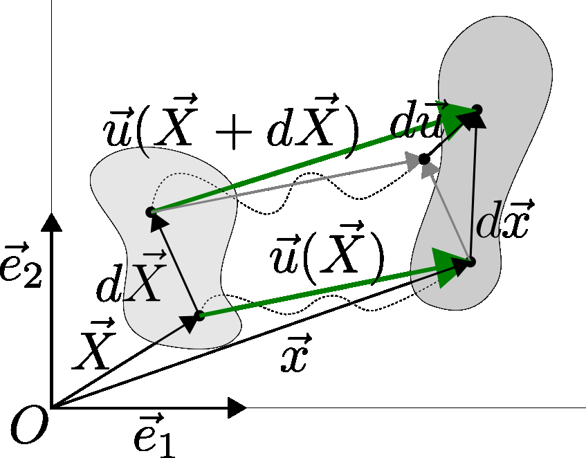

Kinematics of continuum body
Contents
Kinematics of continuum body#
The motion of a continuum body is a continuous time sequence of displacements. Thus, the material body will occupy different configurations at different times so that a particle occupies a series of points in space which describe a pathline. There is continuity during deformation or motion of a continuum body in the sense that:
The material points forming a closed curve at any instant will always form a closed curve at any subsequent time.
The material points forming a closed surface at any instant will always form a closed surface at any subsequent time and the matter within the closed surface will always remain within
{kind=link}
Kinematics: deformation and motion#
It is convenient to identify a reference configuration or initial condition which all subsequent deformed configurations are referenced from. Often, the configuration at \(t=0\) is considered the reference configuration.
{kind=link}
The components \(x_i\) of the position vector \(\vec{x}\) of a particle, taken with respect to the reference configuration, are called the material or reference coordinates.
The displacement of first point is decribed as:
while displacement of second surrounding point is described as:
Substituting first equation into second we got:
which simplifies to:
Taylor’s theorem
Taylor’s theorem states that any function that is infinitely differentiable may be represented by a Taylor series expansion:
than
neglecting higher terms as \(\left | d\vec{X} \right | \ll 1\) as \(dX^{{k}}\) is very small (we explore infinitesimal volume), it is:
Similarily (for details you have to dig into your math classes notes), for vector-valued functions we can write:
where \(\boldsymbol{J}(\vec{u})\) is Jacobian matrix and in strain analysis, we usually called displacement gradient and we use symbol \(\boldsymbol{\nabla u}\). Using that for infinitesimal deformation equation:
it could be written in terms of gradient as:
where \(\boldsymbol{\nabla u}\) is gradient of displacement field or displacement gradient.
Displacement gradient#
The displacement gradient is the matrix of all first-order partial derivatives of each component of the element displacement \(d\vec{u}\) with respect to each component of the reference element \(d\vec{X}\):
and characterise the local change of the displacement field at a material point with position vector \(\vec{X}\). Knowing that:
it could be also written as:
Deformation gradient#
Recalling that \(d\vec{u} = d\vec{x} - d\vec{X}\)
where \(\boldsymbol{F}\) is so called deformation gradient, i.e the derivative of each component of the deformed linear element \(d\vec{x}\) with respect to each component of the reference element \(d\vec{X}\):
and characterizes the local deformation at a material point with position vector \(\vec{X}\), assuming continuity. Knowing that:
it could be also written as:
Properties of deformation gradient#
Deformation gradient \(\boldsymbol{F}\) contains all the required local information about the changes in length, volumes and angles due to the deformation as follows:
When vector \(\vec{X}\) in the reference configuration is deformed into the vector \(\vec{x}\), these vectors are related as: \(\vec{x} = \boldsymbol{F}\vec{X}\)
The Jacobian of the deformation gradient is equal to the ratio between the local volume of the deformed configuration to the local volume in the reference configuration i.e. volume change: \(J = \frac{dV}{dV_0} = \det({\boldsymbol{F})}\)
Two infinitesimal areas with \(da\) and \(dA\) being their magnitudes and \(\vec{n}\) and \(\vec{N}\) are unit vectors perpendicular to them, then the relationship is given by: \((da)\vec{n} = \det(\boldsymbol{F})(dA)\boldsymbol{F}^{-T}\vec{N}\)
An isochoric deformation is a deformation preserving local volume, i.e., \(\det({\boldsymbol{F}})=1\)
A deformation is called homogeneous if \(\boldsymbol{F}\) is constant at every point. Otherwise, the deformation is called non-homogeneous
The physical restriction of possible deformation: \(\det({\boldsymbol{F}}) > 0\)